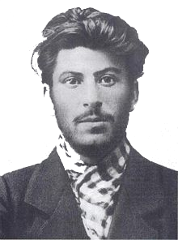
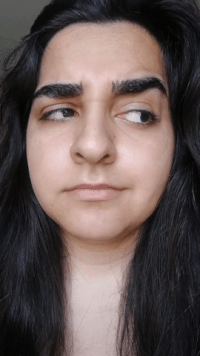

Some goals I have yet to attain, and some skills that I have yet to learn.
- • Possibly work at an animation studio. Laika would be cool because they use so much traditional media.
- • Learn some blacksmithing skills
- • Learn how pipes work. Both in my house, and with reading/writing data
- • ASL (Sign Language)
- • First Aid
- • Basics of 3d modelling and digital sculpture
- • Knowing how to use different modes on my camera...oops
- • I want to get a dremel so I can do metal engraving...That's pretty cool.
- • Get kids excited about technology somehow
- • Handfeeding wild birds in my backyard
-
- • Buying a house with an alarm system and changing each door opening sound into the Seinfeld transition chime
-
Did you want some totally unnessecary facts about me? No? Ok here are some anyway. Have a nice day.
- • The right side (my right) of my jaw clicks whenever I chew
- • I like to sing LOUDLY. Everywhere. Anytime.
- • I like to sing but my jaw is also inconveniently clicky.
- • I think juice from juiceboxes are too sugary.
- • I am typing this on an airplane. I am not joking.
- • Air Canada didn't give me free food. What gives???
- • Fun Fact: I'm running out of facts...
- • When I was a child I used to eat goldfish food sometimes when my parents weren't looking.
- • Goldfish food somewhat tastes like green tea.
- • I do not advise you try to eat goldfish food but if you really want to, I can't stop you.
- • The "default" picture I have used to create this website and troubleshoot my switch statements, test certain JS functions out, etc. Is a picture of young Joseph Stalin. My Highschool history teacher would be proud. Take a look at that hair.
- • 
- • He didn't do very nice things to people but is quite an interesting figure in history.
- • I am still on this plane. There's about 1 hour left.
You've made it this far. You can now witness my most useful skill. Making my eyebrows DANCE!
